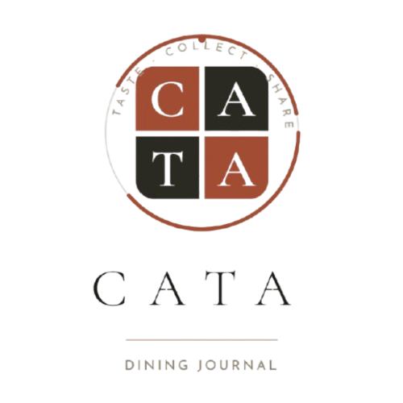
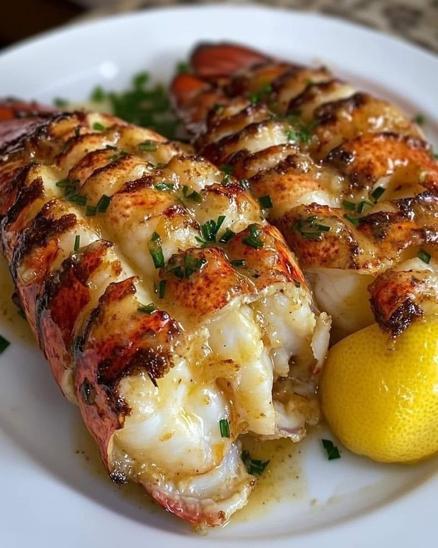

App Insignia · Monarka TECH

Taste · Collect · Share
CATA es el diario social para quienes viven la gastronomía: registra cada platillo que pruebas, descubre lo que se come en tu ciudad, crea Food Journeys de tus viajes y conecta con comunidades de foodies — todo desde una sola app.

Para Comensales
Desde tu primer bocado hasta la mesa del chef, CATA te ayuda a registrar, descubrir y compartir cada experiencia gastronómica — y a conectar con otros amantes de la buena mesa.
Más Funciones
CATA tiene mucho más: sube en el Leaderboard de tu ciudad, únete a Communities de foodies, agrupa tus viajes en Food Journeys y usa el Mapa de Restaurantes Visitados para nunca perder un recuerdo.
Para Restaurantes
CATA ofrece un modo especial para dueños y operadores de restaurantes: reclama tu página, publica tu menú oficial, sigue las reseñas de la comunidad en tiempo real y conecta con tus comensales directamente desde la app.
Contacto CATA
CATA está en desarrollo activo. Únete a la lista de espera o súmate como restaurante socio — te avisaremos en cuanto abramos el acceso anticipado.
Sin spam. Solo novedades de CATA.
Un representante de Monarka TECH te contactará.